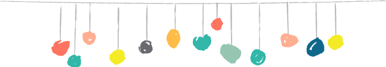
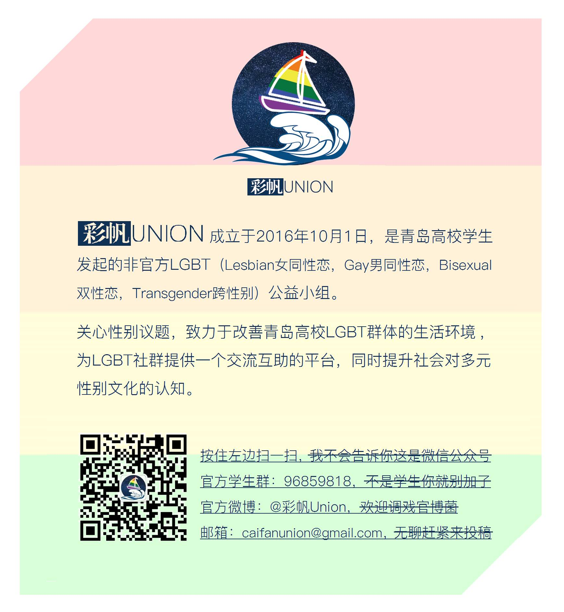

开学前夕，某个上午，青岛大学旁的一家咖啡馆
我们“活捉”了六位同志大学生，拍摄了一部短片
你相信吗？
我们邀请来了六位露脸不打码的同性恋
这就是公开场合不轻易露面的同性恋本人没错了
戳下面来看一看？？？
同志群体常常被噤声，
被选择性忽略与遗忘，
被当做那只，
躲在房间里的大象。
对梦想与爱情的追求，
对平等与自由的向往，
面向家庭的摇摆不定，
TA们与你我并无二致。
同志亦凡人，
这番平淡的娓娓道来中，
我们似乎能找寻到，
“WE ARE ONE”的真正涵义。

关于同志，关于出柜，同样的故事，每天都在社会的每一个角落中，上演着不同的版本。
这一定不会是一段欢快的经历，那些曾受到的诋毁和侮辱，冷眼和嫌弃，都如此残忍与不堪，伤痕都已然结痂然却实实在在不再平整光滑。
伤害像一把把刀刃，试图将每一个寻求自我拯救的灵魂扼杀在黎明之前。锋利的兵器足以将他们杀的片甲不留，暴力的刀刺进他们的身体，言语的刃摧毁他们的神经。生活本就如此艰辛，明明承受了多于常人所受的苦难，凭什么不能拼个美好的未来过活？
视频中出镜的伙伴他们都是涅槃而生的勇士。
TA们不过是平凡普通的大学生，怀有憧憬的青年，面对学业，家庭，爱情与理想，或彷徨，或迷茫...
同志身份，阻挡不了一份前行的脚步，痛熬过去，也变成了轻描淡写的几句话和淡淡的哀愁。
我们无法评判一个周身所处的世界，无法衡量一份努力可以影响到的人事，但仍然愿意努力着，努力着...
回头再看，仿佛你我都一样。
在这个谈爱都觉得很稀有的时代，还在乎那么多条条框框，很累。
性少数说：我们生而不同。
所有人说：我们生而不同。
其实，本来，我们就没什么不同。
#视频已同步投稿至B站（av14046203），欢迎投放弹幕~
#分享这篇推送至朋友圈，给予出镜的伙伴一份支持~
拍摄 | 权毅 壁虎
后期 | 壁虎 书书
文案 | Maine/梦莹
排版 | 神童
特别感谢
青未青年空间
小食光咖啡餐吧
